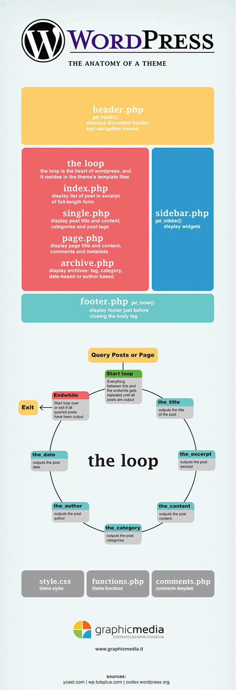
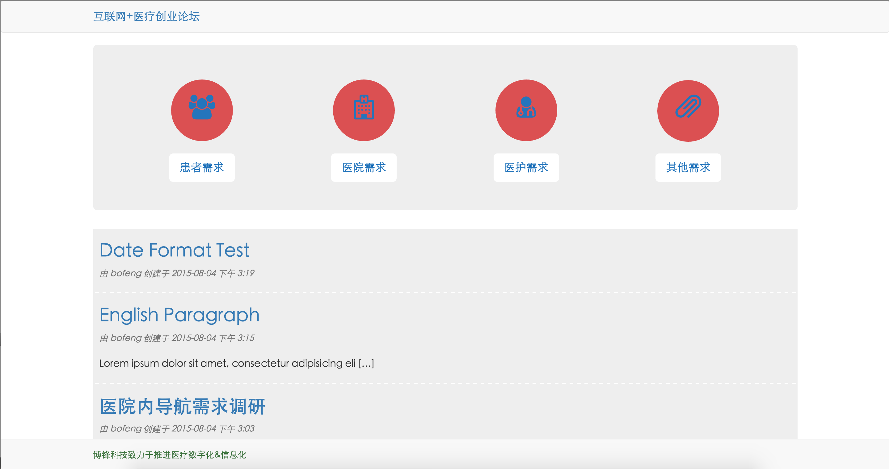
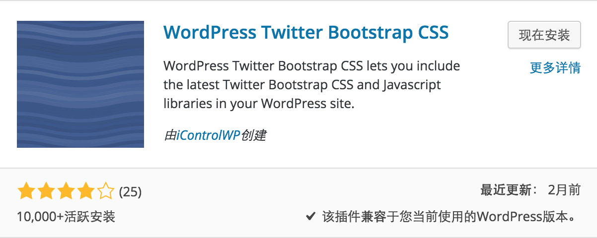
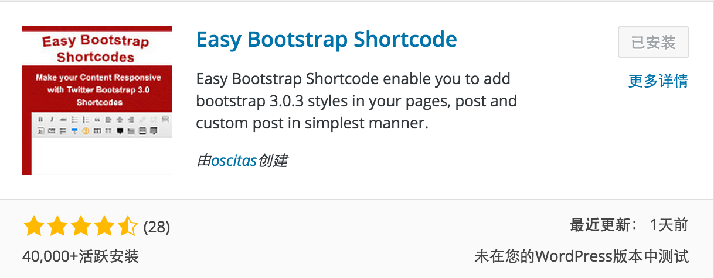
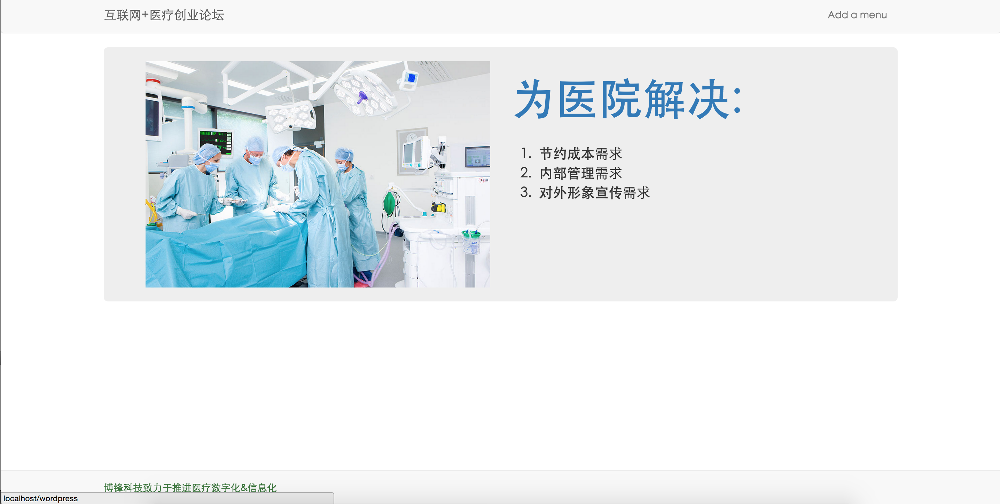

wordpress自定义bootstrap主题
#先上一个wordpress的流程图

将网站的各个模板文件拆分开来
a. style.css
b. index.php
c. header.php
d. footer.php
e. sidebar.php
f. single.php
g. page.php
h. archive.php => category, tag, date-based, author based
i. functions.php => 自定义插件，方法
j. screenshot.png => 非必须，用于显示模板的效果图
style.css基本要素
1 | /* Theme Name: bs3-theme Theme URI: http://www.yangfan-onion.github.com Author: yangfan Author URI: http://www.yangfan-onion.github.com Description: Bootstrap theme in wordpress; Version: 1.0 License: MIT Tags: Bootstrap, Smartphone */ |
index.php基本要素
1 | <?php get_header(); ?> <div class="container"> <?php //给出查询条件 query_posts('posts_per_page=1'); ?> <?php while(have_posts()):the_post();?> <div class="jumbotron"> <h1><?php the_title();?></h1> <p><?php the_excerpt();?></p> <p><a class="btn btn-primary btn-lg" href="#" role="button">Learn more</a></p> </div> <?php endwhile; wp_reset_query();?> </div> <?php get_footer(); ?> |
1 | //the_post() method code public function the_post() { global $post; $this->in_the_loop = true; if ( $this->current_post == -1 ) // loop has just started /** * Fires once the loop is started. * * @since 2.0.0 * * @param WP_Query &$this The WP_Query instance (passed by reference). */ do_action_ref_array( 'loop_start', array( &$this ) ); $post = $this->next_post(); $this->setup_postdata( $post ); } |
functions.php基本要素
1 | <?php // Register Custom Navigation Walker //引用bootstrap的导航条插件 require_once('wp_bootstrap_navwalker.php'); //注册自定义的菜单 register_nav_menus(array( 'primary' => __('Primary Menu', 'bs3-theme') )); //加载脚本 function bs3_theme_scripts() { //加载bootstrap.min.css wp_enqueue_style( 'bootstrap.min.css', get_template_directory_uri() . '/css/bootstrap.min.css'); //加载sytle.css wp_enqueue_style( 'style.css', get_stylesheet_uri() ); //加载js wp_enqueue_script( 'jquery.min.js', get_template_directory_uri() . '/js/jquery.min.js' ); wp_enqueue_script( 'bootstrap.min.js', get_template_directory_uri() . '/js/bootstrap.min.js' ); } //hook the function, 加载wordpress的钩子，wordpress初始化的时候会自动执行这个方法， 其实也可以放到文件里面用get_template_directory_uri（）方法直接引用css和js, 这样用的好处还没探索明白（`需要继续深入`） add_action( 'wp_enqueue_scripts', 'bs3_theme_scripts' ); ?> |
header.php基本要素
1 | <!DOCTYPE html> <html <?php language_attributes(); ?> class="no-js"> <head> <meta charset="<?php bloginfo( 'charset' ); ?>"> <meta name="viewport" content="width=device-width"> <!--[if lt IE 9]> <script src="<?php echo esc_url( get_template_directory_uri() ); ?>/js/html5.js"></script> <![endif]--> <?php wp_head(); ?> </head> <body <?php body_class(); ?>> <nav class="navbar navbar-default header"> <div class="container"> <!-- Brand and toggle get grouped for better mobile display --> <div class="navbar-header"> <button type="button" class="navbar-toggle collapsed" data-toggle="collapse" data-target="#bs-example-navbar-collapse-1" aria-expanded="false"> <span class="sr-only">Toggle navigation</span> <span class="icon-bar"></span> <span class="icon-bar"></span> <span class="icon-bar"></span> </button> <a class="navbar-brand" href="#">bs3-theme</a> </div> <!-- Collect the nav links, forms, and other content for toggling --> <?php wp_nav_menu( array( 'menu' => 'primary', 'theme_location' => 'primary', 'depth' => 2, 'container' => 'div', 'container_class' => 'collapse navbar-collapse', 'container_id' => 'bs-example-navbar-collapse-1', 'menu_class' => 'nav navbar-nav navbar-right', 'fallback_cb' => 'wp_bootstrap_navwalker::fallback', 'walker' => new wp_bootstrap_navwalker()) ); ?> </div><!-- /.container --> </nav> |
footer基本要素
1 | <nav class="navbar navbar-default navbar-fixed-bottom footer"> <div class="container"> <div class="row"> <div class="col-md-12 text-success text"> Bootstrap 3 in wordpress!! </div> </div> </div> </nav> <?php wp_footer(); ?> </body> </html> |
分清了主题的文件结构关系，今天用bootstrap定制了一个简陋的主题，用于公司在医院的问卷调查

步骤如下
首先安装插件可以加载bootstrap的依赖文件，我是用代码自己加载到主题里面的（之前还不知道有这个插件）
第二个必须是Easy Bootstrap Shortcode, 这个插件可以帮你定制一些bootstrap的组件，当然使用工具和纯手写都可以啦！
我将主页设为一个Jumbotron，这个Jumbotron是一个用上面插件写出来的页面，这个Jumbotron是用来导航的，我将网站分成了四个目录
a. 患者需求
b. 医院需求
c. 医护需求
d. 其他需求为每一个分类目录定制顶部的Jumbotron
为Post定制single.php页面，至于comment.php，里面有一句
<?php wp_list_comments();?>，这句会生成已有的评论列表，好像是一个固定格式，我暂时能想到的就是为这个固定格式去写一份css去render它，应该这里也是可以定制的1
<?php get_header(); ?> <div class="container"> <?php // Start the loop. while ( have_posts() ) : the_post(); /* * Include the post format-specific template for the content. If you want to * use this in a child theme, then include a file called called content-___.php * (where ___ is the post format) and that will be used instead. */ //重用模板，后面我也需要将所有post的展现放到一个模板里面提高重用性 // get_template_part( 'content', get_post_format() ); ?> <div class="post"> <h1><?php echo the_title();?></h1> <i class="text-muted"> 由 <?php the_author();?> 创建于 <?php the_time('Y-m-d a g:i'); ?> </i> <strong>Tag: <?php the_category('| '); ?></strong> <p><?php echo the_content();?></p> </div> <?php // If comments are open or we have at least one comment, load up the comment template. if ( comments_open() || get_comments_number() ) : //这里会调用comment.php,我们可以在这里自定义comment.php的样式 comments_template(); endif; // End the loop. endwhile; ?> </div> <?php get_footer(); ?>